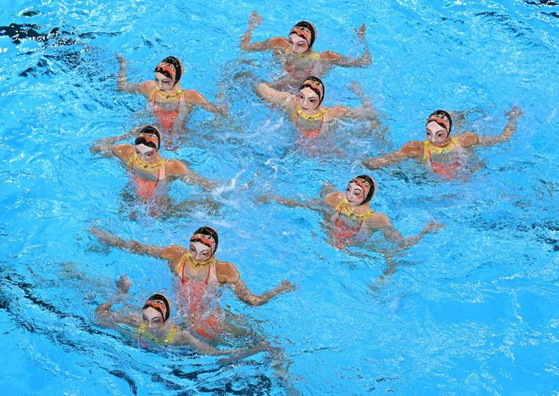
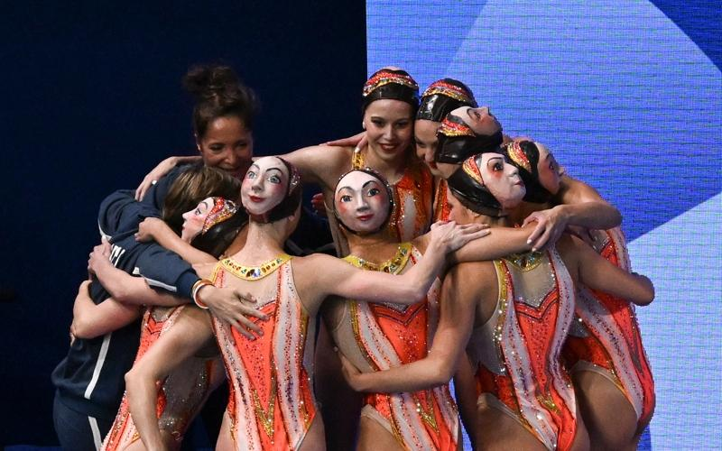
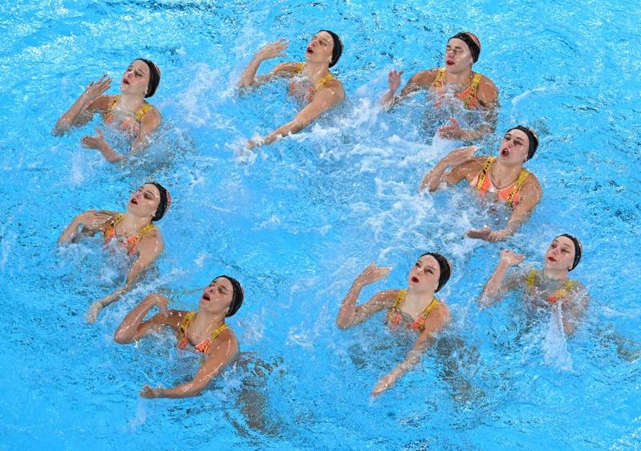

巴黎奥运6日的花样游泳项目，法国队让人眼睛一亮，全体戴着「人脸泳帽」出场，两边都可以看到脸，网友直呼像极了电影哈利波特「神秘的魔法石」（Harry Potter and the Philosopher’s Stone）是结尾中的双面佛地魔。
法国队戴着人脸泳帽，出场时搞笑背对镜头打招呼；在水中轻盈舞动的同时，法国队的凝视却带来了一丝诡异的感觉，有网友说：「水灵灵的舞蹈看着有点吓人。」


法国花泳队选手赛后透露，他们希望通过这个特别造型，展现出花样游泳的多样性，并向世界展示法国的创新和个性。
巴黎奥运花样游泳实施新规则，集体项目由技术自选、自由自选和技巧自选三项比赛组成，总得分最高的队伍将获得最终的冠军。
中国队暂以总分712.4455继续排名第一。